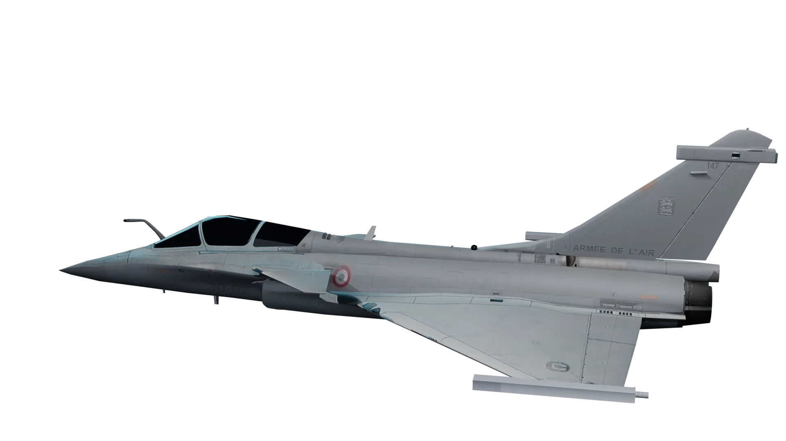
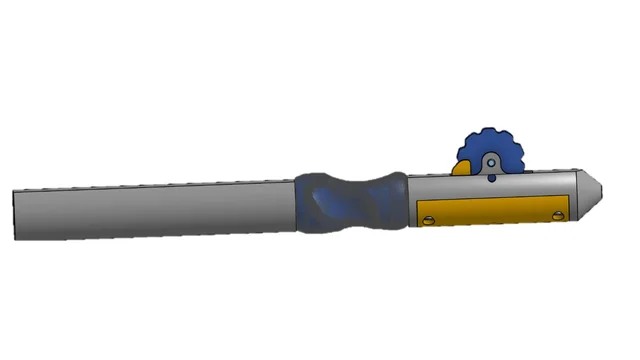
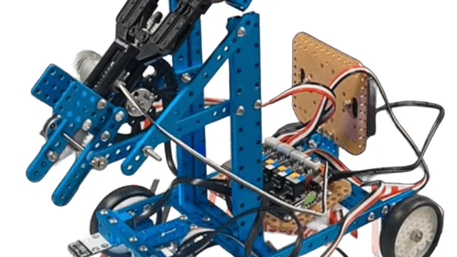
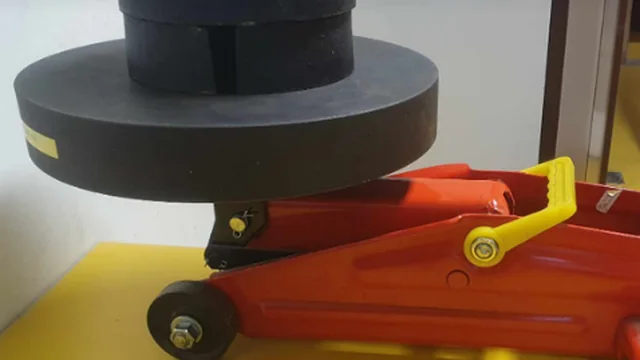
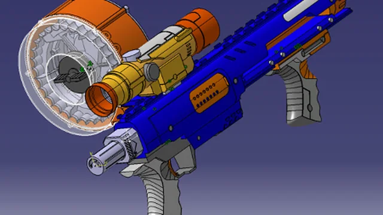
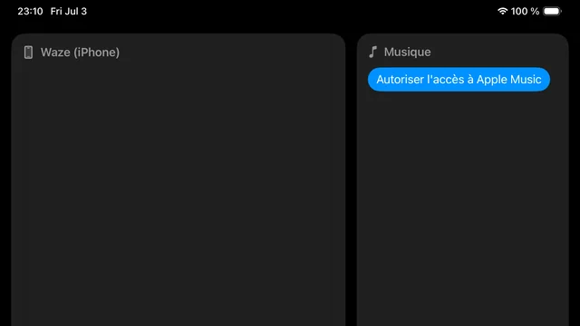

ClémentBalcon.
Je transforme des problèmes de production en systèmes plus simples, plus fiables et plus utiles — de l'atelier à la donnée.

et production
documentés
portugais, anglais
l'industrie lisible
Les pièces
à conviction.
Chaque projet est une trace concrète : un problème, une méthode, un résultat. Ouvre les dossiers qui t'intéressent.

Solder Pen
Outillage de brasage, analyse fonctionnelle, CATIA et prototype imprimé.
Ouvrir le dossier →
RobAFIS
Coordination IVV d'un robot autonome récompensé par le Prix de l'Innovation.
Ouvrir le dossier →
Cric hydraulique
Statique 3D, schéma cinématique et validation expérimentale.
Ouvrir le dossier →
Nerf Rider CS-35
Rétro-modélisation surfacique et assemblage multi-pièces sous CATIA V5.
Ouvrir le dossier →Taipei 101
Rayleigh-Ritz, éléments finis et dimensionnement d'un pendule anti-vibratoire.
Ouvrir le dossier →
CarDashboard
Dashboard embarqué iPad, streaming pair-à-pair et SwiftUI.
Ouvrir le dossier →Training Tracker
Une web app pour transformer les séances en décisions d'entraînement.
Ouvrir l'application →Le parcours
derrière les pièces.
Un profil entre atelier, école d'ingénieur et terrain industriel.
Expérience
Ce que je mobilise
La bonne question n'est pas « que sais-je faire ? » mais « où cela rend-il le système meilleur ? »
Je suis étudiant ingénieur UTC en filière Production Intégrée et Logistique, en alternance chez Safran Aircraft Engines. Français, portugais et anglais me servent à passer d'un atelier à une équipe internationale.
À moyen terme, je veux mettre l'ingénierie au service d'une mécanique de précision plus agile, plus documentée et plus proche du terrain.